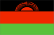

{kind=link}


![[Country map of Malawi]](../maps/mi-map.jpg)
| Malawi |  |
|
| | |
| Introduction |
Background: Established in 1891, the British protectorate of Nyasaland became the independent nation of Malawi in 1964. After three decades of one-party rule, the country held multiparty elections in 1994 under a provisional constitution, which took full effect the following year.
| Geography |
Location: Southern Africa, east of Zambia
Geographic coordinates: 13 30 S, 34 00 E
Map references: Africa
Area:
total:
118,480 sq km
land:
94,080 sq km
water:
24,400 sq km
Area - comparative: slightly smaller than Pennsylvania
Land boundaries:
total:
2,881 km
border countries:
Mozambique 1,569 km, Tanzania 475 km, Zambia 837 km
Coastline: 0 km (landlocked)
Maritime claims: none (landlocked)
Climate: sub-tropical; rainy season (November to May); dry season (May to November)
Terrain: narrow elongated plateau with rolling plains, rounded hills, some mountains
Elevation extremes:
lowest point:
junction of the Shire River and international boundary with Mozambique 37 m
highest point:
Sapitwa 3,002 m
Natural resources: limestone, arable land, hydropower, unexploited deposits of uranium, coal, and bauxite
Land use:
arable land:
34%
permanent crops:
0%
permanent pastures:
20%
forests and woodland:
39%
other:
7% (1993 est.)
Irrigated land: 280 sq km (1993 est.)
Natural hazards: NA
Environment - current issues: deforestation; land degradation; water pollution from agricultural runoff, sewage, industrial wastes; siltation of spawning grounds endangers fish populations
Environment - international agreements:
party to:
Biodiversity, Climate Change, Desertification, Endangered Species, Environmental Modification, Hazardous Wastes, Marine Life Conservation, Nuclear Test Ban, Ozone Layer Protection, Wetlands
signed, but not ratified:
Law of the Sea
Geography - note: landlocked
| People |
Population:
10,385,849
note:
estimates for this country explicitly take into account the effects of excess mortality due to AIDS; this can result in lower life expectancy, higher infant mortality and death rates, lower population and growth rates, and changes in the distribution of population by age and sex than would otherwise be expected (July 2000 est.)
Age structure:
0-14 years:
45% (male 2,335,440; female 2,324,012)
15-64 years:
52% (male 2,671,580; female 2,766,560)
65 years and over:
3% (male 117,932; female 170,325) (2000 est.)
Population growth rate: 1.61% (2000 est.)
Birth rate: 38.49 births/1,000 population (2000 est.)
Death rate: 22.44 deaths/1,000 population (2000 est.)
Net migration rate: 0 migrant(s)/1,000 population (2000 est.)
Sex ratio:
at birth:
1.03 male(s)/female
under 15 years:
1 male(s)/female
15-64 years:
0.97 male(s)/female
65 years and over:
0.69 male(s)/female
total population:
0.97 male(s)/female (2000 est.)
Infant mortality rate: 122.28 deaths/1,000 live births (2000 est.)
Life expectancy at birth:
total population:
37.58 years
male:
37.2 years
female:
37.98 years (2000 est.)
Total fertility rate: 5.33 children born/woman (2000 est.)
Nationality:
noun:
Malawian(s)
adjective:
Malawian
Ethnic groups: Chewa, Nyanja, Tumbuko, Yao, Lomwe, Sena, Tonga, Ngoni, Ngonde, Asian, European
Religions: Protestant 55%, Roman Catholic 20%, Muslim 20%, indigenous beliefs
Languages: English (official), Chichewa (official), other languages important regionally
Literacy:
definition:
age 15 and over can read and write
total population:
58%
male:
72.8%
female:
43.4% (1999 est.)
| Government |
Country name:
conventional long form:
Republic of Malawi
conventional short form:
Malawi
former:
Nyasaland
Data code: MI
Government type: multiparty democracy
Capital: Lilongwe
Administrative divisions:
24 districts; Blantyre, Chikwawa, Chiradzulu, Chitipa, Dedza, Dowa, Karonga, Kasungu, Lilongwe, Machinga (Kasupe), Mangochi, Mchinji, Mulanje, Mwanza, Mzimba, Ntcheu, Nkhata Bay, Nkhotakota, Nsanje, Ntchisi, Rumphi, Salima, Thyolo, Zomba
note:
there may be three new districts named Balaka, Likoma, and Phalombe
Independence: 6 July 1964 (from UK)
National holiday: Independence Day 6 July (1964); Republic Day 6 July (1966)
Constitution: 18 May 1995
Legal system: based on English common law and customary law; judicial review of legislative acts in the Supreme Court of Appeal; has not accepted compulsory ICJ jurisdiction
Suffrage: 18 years of age; universal
Executive branch:
chief of state:
President Bakili MULUZI (since 21 May 1994); note - the president is both the chief of state and head of government
head of government:
President Bakili MULUZI (since 21 May 1994); note - the president is both the chief of state and head of government
cabinet:
28-member cabinet named by the president
elections:
president elected by popular vote for a five-year term; election last held 15 June 1999 (next to be held NA 2004)
election results:
Bakili MULUZI reelected president; percent of vote - Bakili MULUZI (UDF) 51.4%, Gwandaguluwe CHAKUAMBA (MCP-AFORD) 44.3%
Legislative branch:
National Assembly (193 seats; members elected by popular vote to serve five-year terms)
elections:
last held 15 June 1999 (next to be held NA 2004)
election results:
percent of vote by party - UDF 48%, MCP 34%, AFORD 15%, others 3%; seats by party - UDF 93, MCP 66, AFORD 29, others 4, vacancy 1
Judicial branch: Supreme Court of Appeal; High Court, chief justice appointed by the president, puisne judges appointed on the advice of the Judicial Service Commission; magistrate's courts
Political parties and leaders: Alliance for Democracy or AFORD [Chakufwa CHIHANA, president]; Malawi Congress Party or MCP [Gwanda CHAKUAMBA, president, John TEMBO, vice president]; Malawi Democratic Party or MDP [Kampelo KALUA, president]; Social Democratic Party or SDP [Eston KAKHOME, president]; United Democratic Front or UDF [Bakili MULUZI] - governing party
International organization participation: ACP, AfDB, C, CCC, ECA, FAO, G-77, IBRD, ICAO, ICFTU, ICRM, IDA, IFAD, IFC, IFRCS, ILO, IMF, IMO, Intelsat, Interpol, IOC, ISO (correspondent), ITU, NAM, OAU, OPCW, SADC, UN, UNCTAD, UNESCO, UNIDO, UNMIK, UPU, WFTU, WHO, WIPO, WMO, WToO, WTrO
Diplomatic representation in the US:
chief of mission:
Ambassador Willie CHOKANI
chancery:
2408 Massachusetts Avenue NW, Washington, DC 20008
telephone:
[1] (202) 797-1007
Diplomatic representation from the US:
chief of mission:
Ambassador Amelia Ellen SHIPPY
embassy:
address NA, in new development area in Lilongwe
mailing address:
P. O. Box 30016, Lilongwe 3, Malawi
telephone:
[265] 783 166
FAX:
[265] 780 471
Flag description: three equal horizontal bands of black (top), red, and green with a radiant, rising, red sun centered in the black band
Government - note: the executive exerts considerable influence over the legislature
| Economy |
Economy - overview: Landlocked Malawi ranks among the world's least developed countries. The economy is predominately agricultural, with about 90% of the population living in rural areas. Agriculture accounts for 37% of GDP and 85% of export revenues. The economy depends on substantial inflows of economic assistance from the IMF, the World Bank, and individual donor nations. The government faces strong challenges, e.g., to spur exports, to improve educational and health facilities, to face up to environmental problems of deforestation and erosion, and to deal with the rapidly growing problem of HIV/AIDS.
GDP: purchasing power parity - $9.4 billion (1999 est.)
GDP - real growth rate: 4.2% (1999 est.)
GDP - per capita: purchasing power parity - $940 (1999 est.)
GDP - composition by sector:
agriculture:
37%
industry:
29%
services:
34% (1998 est.)
Population below poverty line: 54% (1990-91 est.)
Household income or consumption by percentage share:
lowest 10%:
NA%
highest 10%:
NA%
Inflation rate (consumer prices): 45% (1999)
Labor force: 3.5 million
Labor force - by occupation: agriculture 86%, wage earners 14% (1990 est.)
Unemployment rate: NA%
Budget:
revenues:
$490 million
expenditures:
$523 million, including capital expenditures of $NA (FY99/00 est.)
Industries: tobacco, tea, sugar, sawmill products, cement, consumer goods
Industrial production growth rate: NA%
Electricity - production: 922 million kWh (1998)
Electricity - production by source:
fossil fuel:
2.39%
hydro:
97.61%
nuclear:
0%
other:
0% (1998)
Electricity - consumption: 857 million kWh (1998)
Electricity - exports: 0 kWh (1998)
Electricity - imports: 0 kWh (1998)
Agriculture - products: tobacco, sugarcane, cotton, tea, corn, potatoes, cassava (tapioca), sorghum, pulses; cattle, goats
Exports: $510 million (f.o.b., 1999)
Exports - commodities: tobacco, tea, sugar, cotton, coffee, peanuts, wood products
Exports - partners: South Africa 15%, US 9%, Germany 9%, Netherlands 7%, Japan (1998)
Imports: $512 million (f.o.b., 1999)
Imports - commodities: food, petroleum products, semimanufactures, consumer goods, transportation equipment
Imports - partners: South Africa 38%, Zimbabwe 18%, Zambia 8%, Japan 4%, US, UK, Germany (1998)
Debt - external: $2.3 billion (1999 est.)
Economic aid - recipient: $416.5 million (1995)
Currency: 1 Malawian kwacha (MK) = 100 tambala
Exchange rates: Malawian kwachas (MK) per US$1 - 46.3494 (December 1999), 44.0881 (1999), 31.0727 (1998), 16.4442 (1997), 15.3085 (1996), 15.2837 (1995)
Fiscal year: 1 July - 30 June
| Communications |
Telephones - main lines in use: 34,000 (1995)
Telephones - mobile cellular: 382 (1995)
Telephone system:
domestic:
fair system of open-wire lines, microwave radio relay links, and radiotelephone communications stations
international:
satellite earth stations - 2 Intelsat (1 Indian Ocean and 1 Atlantic Ocean)
Radio broadcast stations: AM 9, FM 4 (plus 15 repeater stations), shortwave 3 (1998)
Radios: 2.6 million (1997)
Television broadcast stations: 1 (1999)
Televisions: 0 (1999)
Internet Service Providers (ISPs): 1 (1999)
| Transportation |
Railways:
total:
789 km
narrow gauge:
789 km 1.067-m gauge
Highways:
total:
28,400 km
paved:
5,254 km
unpaved:
23,146 km (1996 est.)
Waterways: Lake Nyasa (Lake Malawi); Shire River, 144 km
Ports and harbors: Chipoka, Monkey Bay, Nkhata Bay, Nkhotakota, Chilumba
Airports: 44 (1999 est.)
Airports - with paved runways:
total:
5
over 3,047 m:
1
1,524 to 2,437 m:
1
914 to 1,523 m:
3 (1999 est.)
Airports - with unpaved runways:
total:
39
1,524 to 2,437 m:
1
914 to 1,523 m:
15
under 914 m:
23 (1999 est.)
| Military |
Military branches: Army (includes Air Wing and Naval Detachment), Police (includes paramilitary Mobile Force Unit)
Military manpower - availability:
males age 15-49:
2,397,385 (2000 est.)
Military manpower - fit for military service:
males age 15-49:
1,229,676 (2000 est.)
Military expenditures - dollar figure: $17 million (FY96/97)
Military expenditures - percent of GDP: 0.8% (FY96/97)
| Transnational Issues |
Disputes - international: dispute with Tanzania over the boundary in Lake Nyasa (Lake Malawi)